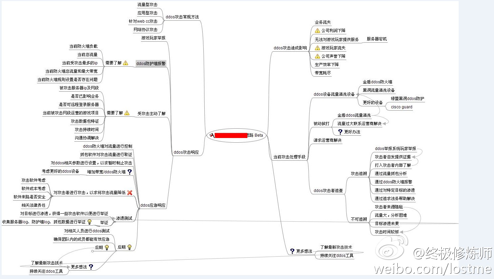

DDoS防护
DDoS攻击与防护总结
- DDoS攻击与防护总结
- DDoS攻击及对策
- 
- DDoS攻击方法和治理
- DDoS攻击与防御技术
- DDoS攻击及对策

DDoS防护产品
阿里云 游戏盾
- 阿里云 游戏盾
- 一句话描述：阿里云针对游戏行业面对的DDoS、CC攻击推出的针对性的网络安全解决方案
- 谁开发的：阿里云
- 针对什么：DDoS、CC攻击
- 适用行业：游戏行业
- 什么东西：网络安全解决方案
- 目的：
- 帮助游戏行业用户用更低的成本缓解超大流量攻击和CC攻击
- 解决以往的攻防框架中资源不对等的问题
- 帮助游戏行业用户用更低的成本缓解超大流量攻击和CC攻击
- 对比
- 高防IP
- 防护成本更低，效果更好
- 除了能针对大型DDoS攻击（T级别）进行有效防御外
- 还具备彻底解决游戏行业特有的TCP协议的CC攻击问题能力
- 防护成本更低，效果更好
- 与传统单点防御DDoS防御方案相比
- 游戏盾用数据和算法来实现智能调度，将“正常玩家”流量和“黑客攻击”流量快速分流至不同的节点，最大限度缓解大流量攻击；
- 通过端到端加密，让模拟用户行为的小流量攻击也无法到达客户端
- 同时
- 在传统防御中，黑客很容易锁定攻击目标IP，在攻击过程中受损非常小。
- 而游戏盾的智能调度和识别
- 可让用户“隐形”，让黑客“显形”
- 每一次攻击都会让黑客受损一次，攻击设备和肉鸡不再重复可用。
- 可让用户“隐形”，让黑客“显形”
- 颠覆以往DDoS攻防资源不对等的状况
- 高防IP
- 架构和原理
- 游戏盾防御DDoS攻击的原理
- 游戏盾防御CC攻击的原理
- 游戏盾防御DDoS攻击的原理
- 客户应用举例
- DDoS攻击防护
- CC攻击防护
- 链路监测
- 拥塞调度
- 全网加速
- DDoS攻击防护
- 一句话描述：阿里云针对游戏行业面对的DDoS、CC攻击推出的针对性的网络安全解决方案

极御
极御云安全(StopDDoS)是一家专业的云安全服务商。其也有一些抗DDoS的产品：